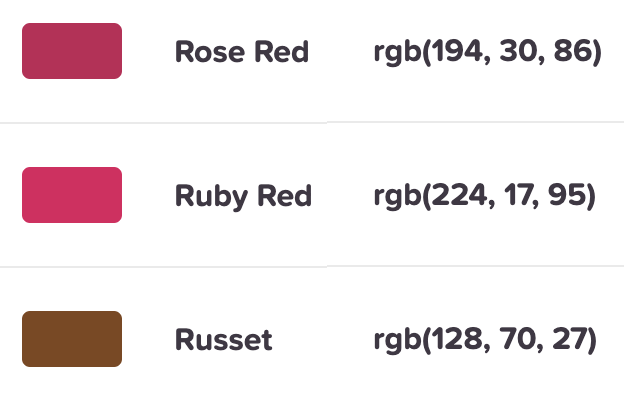
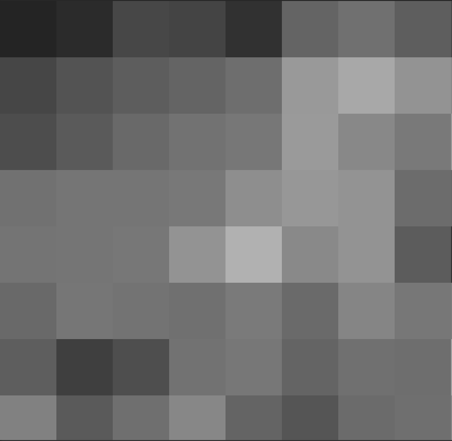

Taxonomy of Data
Images as data
Images are composed of pixels (this image is 1520 by 1012)
The color in each pixel is in RGB

Each band takes a value from 0-255
This image is data with 1520 x 1012 x 3 values.

Grayscale
- Grayscale images have only one band
- 0 is black, 255 is white
- This image is data with 1520 x 1012 x 1 values.

Grayscale
- To simplify, assume our photos are 8 x 8 grayscale images.

Images in a Data Frame
Consider the following images which are our data:

- Let’s simplify them to 8 x 8 grayscale images
Images in a Data Frame


If you were to put the data from these (8 x 8 grayscale) images into a data frame, what would the dimensions of that data frame be in rows x columns? Answer at pollev.com.
01:00